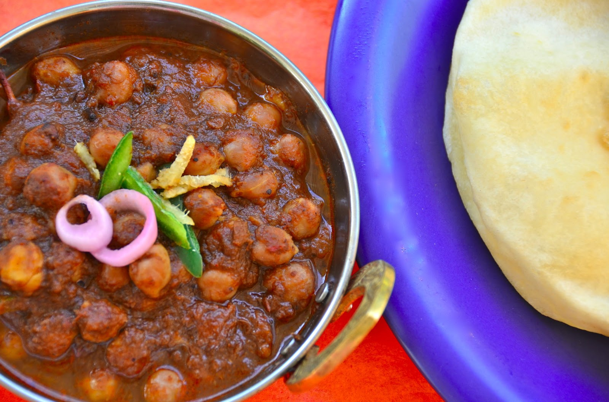

Paneer Tikka
Ingredients:
- 250g paneer cubes
- 1 bell pepper, diced
- 1 onion, diced
- 2 tablespoons yogurt
- 1 teaspoon garam masala
Instructions:
- Marinate paneer cubes, bell pepper, and onion in yogurt and garam masala mixture.
- Thread paneer cubes, bell pepper, and onion onto skewers.
Aloo Gobi
Ingredients:
- 2 potatoes, peeled and cubed
- 1 small cauliflower, cut into florets
- 1 onion, finely chopped
- 2 tomatoes, chopped
- 2 cloves garlic, minced
Instructions:
- Heat oil in a pan and add cumin seeds. Let them splutter.
- Add chopped onions, minced garlic, and grated ginger. Sauté until onions turn translucent.
Chole Bhature
Ingredients:
- 1 cup dried chickpeas (chole), soaked overnight
- 2 onions, finely chopped
- 2 tomatoes, finely chopped
- 2 cloves garlic, minced
- 1-inch ginger, grated
Instructions:
- Heat oil in a pan and add cumin seeds. Let them splutter.
- Add chopped onions, minced garlic, grated ginger, and green chilies.
- Add chopped tomatoes and cook until they become soft.